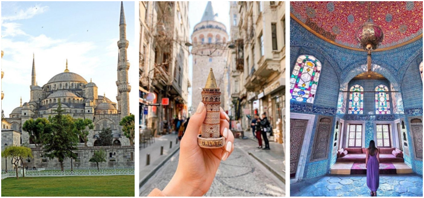
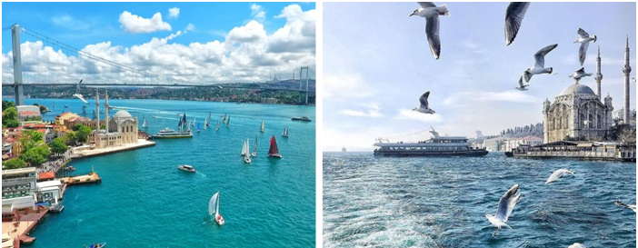
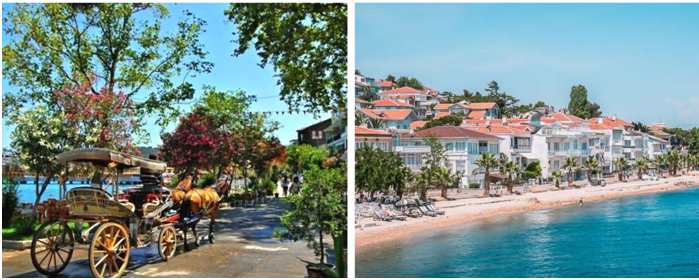

Du 22 au 29 janvier 2022 – Du 19 au 26 février 2022
Du 12 au 19 mars 2022 – Du 23 au 30 avril 2022
– 7 nuitées Hébergement hôtel 4* à Taksim
– Transferts : aéroport Istanbul – Hôtel – aéroport Istanbul
– Vol avec Royal Air Maroc
– Option visites : City tour, traversée du Bosphore, excursion à l’Ile des Princesses …
– Option Transferts : aller de Terratour Rabat à l’aéroport de Casablanca, retour de l’aéroport à votre domicile à Rabat.
Rendez-vous à l’agence Terratour Aviation à 05h30 pour transfert à l’aéroport international Mohamed V de Casablanca en autocar touristique.
VOL AT 910 – ROYAL AIR MAROC
DEPART: CASABLANCA, MA (MOHAMMED V), TERMINAL 1 10h00
ARRIVEE: ISTANBUL, TR, TERMINAL I – 16h40
FRANCHISE BAGAGES: 1 pièce de 23 kilos
A l’arrivée, accueil par notre correspondant et transfert à votre hôtel 4*.
Installation dans vos chambres.
Dîner libre
Nuitée à l’hôtel à TAKSIM.
Petit-déjeuner à l’hôtel. Demi-journée consacrée à la visite des principaux monuments de la ville : Topkapi, l’Hippodrome, centre de la vie sociale et politique de Constantinople et la Mosquée Bleue, tapissée de faïences d’Iznik, la seule à posséder six minarets.
Déjeuner libre.
La Mosquée bleue, appelée aussi la mosquée du sultan Ahmed Ier fut construite entre 1609 et 1616. Elle est l’une des mosquées les plus connues sous le nom Mosquée bleue pour les céramiques à dominante bleue qui ornent les murs intérieurs.
Nuitée à l’hôtel à TAKSIM
Après le petit-déjeuner, départ pour la traversée du Bosphore par le pont suspendu pour un tour de découverte de la partie asiatique, cœur de la ville moderne. Le Bosphore est le détroit qui relie la mer Noire à la mer de Marmara et marque, avec les Dardanelles, la limite méridionale entre les continents asiatique et européen. Il est long de 32 kilomètres pour une largeur de 698 à 3 000 mètres
Déjeuner libre et retour vers l’Europe
Diner libre. Nuitée à l’hôtel à TAKSIM.
Petit-déjeuner à l’hôtel, départ pour une demi-journée de visite de l’Île des princesses.
A 15 km au sud-est d’Istanbul se trouve cet endroit hors du temps, un endroit reposant, pas trop loin de la grande ville pour le plus grand plaisir des Stambouliotes.
C’est un archipel de 9 îles dans La Mer De Marmara. Elle fait partie d’un des 39 districts d’Istanbul.
Le soir, dîner libre. Nuitée à l’hôtel à TAKSIM.
Petit-déjeuner. Journée libre pour découvrir cette ville à votre rythme.
Nuitée à l’hôtel à TAKSIM
Petit-déjeuner. Journée libre.
Nuitée à l’hôtel à TAKSIM
Petit-déjeuner. Journée libre.
Nuitée à l’hôtel à TAKSIM
Petit-déjeunerà l’hôtel àTAKSIM.
Check-out à midi avec possibilité de laisser les bagages à la réception.
Transfert à l’aéroport pour le vol retour à destination de Casablanca.
VOL AT 911 – ROYAL AIR MAROC
DEPART: ISTANBUL, TR, TERMINAL I – 18h10
INTERNATIONAL TERMINAL
ARRIVEE: CASABLANCA, MA (MOHAMMED V), TERMINAL 2 21h15
FRANCHISE BAGAGES: 1 pièce de 23 kilo
Accueil à l’aéroport et transfert en autobus climatisé à Terratour Aviation puis à votre domicile (pour les participants habitants Rabat).
| Hôtels | Catégorie | Emplacement | PP en DBL | PP en TPL | Sup SGL | Enf 2 – 5 ans | Enf 6 – 10.99 ans |
| Green Park | 4* STANDARD | TAKSIM | 6.990 dhs | 6.950dhs | 1.900 dhs | 4.100 dhs | 5.500 dhs |